PrinterShares 什么是 PrinterShares ？ 在最新一波 DeFi 协议中，我们已经看到许多平台出现，允许用户用他们的资金来换取协议的代币。在本文中，我们将了解 PrineterShare
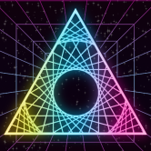 Prism Finance 什么是 Prism Finance棱镜金融？ Prism Finance是一个创新且可靠的双链自动做市商（AMM）去中心化交易所和收益优化器，托管在币安智能链和 Polygon 上
RimSwap RIMSwap 是最早建立在 Oasis Emerald 网络上的自动做市商 (AMM)、去中心化交易所 (DEX) 之一。支持一系列服务和功能，它可以让您交换加密资产，通过质押和收益耕作、NF
RobinHoodSwap RobinHoodSwap 是一个运行在币安智能链 (BSC) 上的单产农业生态系统。我们在 RobinHoodSwap 代币或 RBH 上运行。 RobinHoodSwap 的目标是让用户利用区块链和 DeFi 来获得奖励，同时通过回馈慈善组织来为社
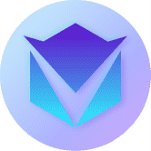 RoboFi - Dao Trading Bots RoboFi 为您的交易活动赋能。您可以建立交易策略并选择如此多的交易机器人来自动化整个交易过程。另一方面，如果您是交易机器人开发人员，您可以在 RoboFi 市场上
RobustSwap 什么是 RobustSwap？ RobustSwap 是币安智能链上革命性的去中心化交易所（DEX）和自动做市商（AMM），旨在通过稀缺性和流动性优化盈利能力。 RobustSwap 是
Rocket Pool Rocket Pool 是第一个真正去中心化的以太坊质押池。流动质押、经审计的 SC 和最小化的处罚风险。与单独的质押者不同，他们需要存入 32 ETH 以创建新的验证者，Roc
RocketLemon Finance RocketLemon Finance 是一个游戏化、社区驱动的单产农业项目，由一群在 DeFi 领域拥有丰富经验的热情软件开发人员开发。它是 BSC 网络上最新的去中心化、安全、可靠和高回报的
RocketSwap.fi 月亮是昨天。超越是我们的终极目标。 Rocketswap 🚀 🌝 是币安智能链上最新的收益农场和 Staking 平台，由航天员为航天员打造。Rocketswap 是 BSC 上经过全面审核的
WorldSwap - BALI Edition WorldSwap.Finance 是增强型多链单产农业生态系统的核心，其设计和实施考虑了一个简单而强大的理念：提供超高产的独立农场，同时为农民和农民提供一个不断增长的活跃和
WorldSwap - HANOI Edition WorldSwap.Finance 是增强型多链单产农业生态系统的核心，其设计和实施考虑了一个简单而强大的理念：提供超高产的独立农场，同时为农民和农民提供一个不断增长的活跃和
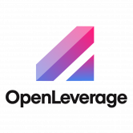 OpenLeverage OpenLeverage 是一种无需许可的借贷和保证金交易协议，具有聚合的 DEX 流动性，使零售和机构客户能够高效、安全地做多或做空 DEX 上的任何交易对。这意味着任何人都可以
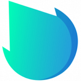 OpenSwap OpenSwap 是 Harmony 网络上的 DeFi 协议，具有简单的单产农业功能；用于连接 Harmony、以太坊和币安智能链网络的跨链工具；以及用户交易、提供流动性和从交易中赚
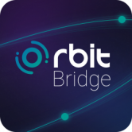 Orbit Bridge Orbit-chain 是一种多资产区块链，通过去中心化的区块链间通信（IBC）存储、传输和验证存在于各种公共区块链上的信息和资产。 Orbit Chain 一直致力于超越限制传统公共
Origin Dollar (OUSD) OUSD 是一种新型稳定币，无需任何质押或锁定即可自动从 DeFi 协议中获得收益。您的收入不断复合，并反映在您不断增加的 OUSD 余额中，该余额由其他经过验证的稳定
OtterClam OtterClam 是一个去中心化的生态系统，在元界中融合了金融、治理和 NFT 的元素。这三个组件分别对应于 OtterClam 的金库、DAO 和 Otter Kingdom。OtterClam 是
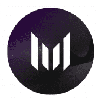 Muuu Finance Muuu Finance 提供最简单的方法来最大化您的奖励，而无需锁定 DEX 和 Lending 协议的原生资产。 Muuu Finance 是 Astar Network 上的第一个原生收益助推器，可让您在不锁定 KGL 的情况下最大化您的
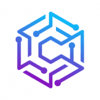 MyFunding.Network MyFunding.Network 是一个开源智能合约，它使用专业交易者提供的下一代技术分析和策略来产生高利润交易。 MyFunding.Network 是最先进的交易机器人 dapp，可为加密交易提供最大利润。
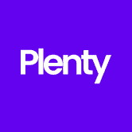 Plenty Plenty 是 Tezos 上的一体化去中心化平台。使用新的 Plenty Network 用户将能够： 1.交易不相关的资产，和/或紧密相关的资产，以低成本和接近零的滑点与亚瑟的平坦曲线交易
PlumCake Finance PlumCake 是由经验丰富的开发团队设计的全新 DeFi 项目，作为币安智能链上的新一代通缩收益农场。 除了 Goose Finance 引入的回购销毁机制外，PlumCake 还实施了独特的
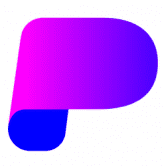 Pocket Finance Pocket Finance 于 2021 年 11 月推出，是一个加密产品生态系统，包括农场、矿池、保险库、套利交易、NFT 市场、DAO、预测市场、借贷协议，旨在创建一体化套件。 除
Pod Together Pod Together 是作为 DeFi 农业彩票而构建的，是一款每个人都是赢家的储蓄游戏。由 Pool Together 分叉而成。你可以： 以疯狂的 APY 回报质押您最喜爱的代币 赢得每周抽奖的机会。 独
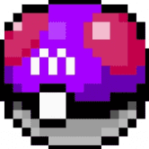 POKEDAO PokéDAO 是一个去中心化自治组织 (DAO)，它将 DeFi + Pokémon + NFT 三个世界中最好的结合在一起。它允许用户通过质押 BNB 来被动赚取 BNB。
PolkaBridge PolkaBridge 是一个去中心化的应用平台。PolkaBridge 最引人注目的产品之一是 PolkaBridge DEX——一个去中心化的交易所，它允许用户在没有任何中心化组织的情
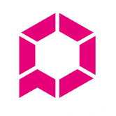 PolkaEx PolkaEx – Shiden 网络上的第一个 DEX。它是由波卡驱动的跨链 DEX，利用 Shiden 和 Astar Networks 的强大功能，提供更高的 TPS、更低的交易成本和流畅的交易。PolkaEx
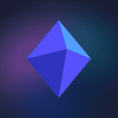 Polkamarkets Polkamarkets 是一种自主预测市场协议，专为多链信息交换和交易而构建，用户在去中心化和可互操作的 EVM 中对现实世界事件的结果持仓。 在任何与 EVM 兼容的区块链上部署
PolyBunny PolyBunny 是一个新的、快速增长的 DeFi 收益聚合器，用于 QuickSwap 和 SushiSwap。PolyBunny 协议使农民能够利用他们寻求产量的倾向来优化产量复合策略。
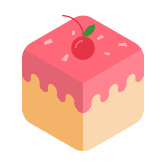 Polycake Finance Polygon 上排名第一的 Yield Farm 和 Defi 聚合器。所谓DeFi中的聚合器,就是一个支持多种 DeFi 协议的聚合平台,它可以在各个提供流动性挖矿的DeFi协议之间自动进行
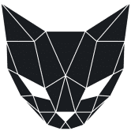 Polycat Finance Polycat Finance 是最早在 Polygon 上推出的单产农场之一。凭借一支极其热情和知识渊博的团队，已经成长为 Polygon 上最值得信赖的平台之一，并经过了 Paladin、Obeli
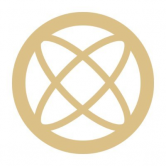 MITH Cash 通过 MIC 的第一个通缩阶段，MIC 团队确定了在发行秘银债券 (MIB) 方面需要改进的领域。目前，该团队正在为此努力。我们与算法设计顾问讨论了发行新债券 (MIB) 的
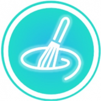 MixSwap MixSwap 是一款基于币安智能链（BSC）的一体化 DeFi 银行应用程序。 尽管去中心化金融在发达国家引起了极大的兴趣，但我们认为，只有通过将 DeFi 提供的可能性与安
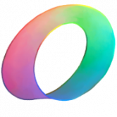 Mobius Money Mobius 是一个跨链稳定交换交易所，将 Celo 稳定币连接到 Ethereum、Solana、Terra、Polygon 和 Avalanche。Mobius 是获


，以赚取交易费和代币排放。")